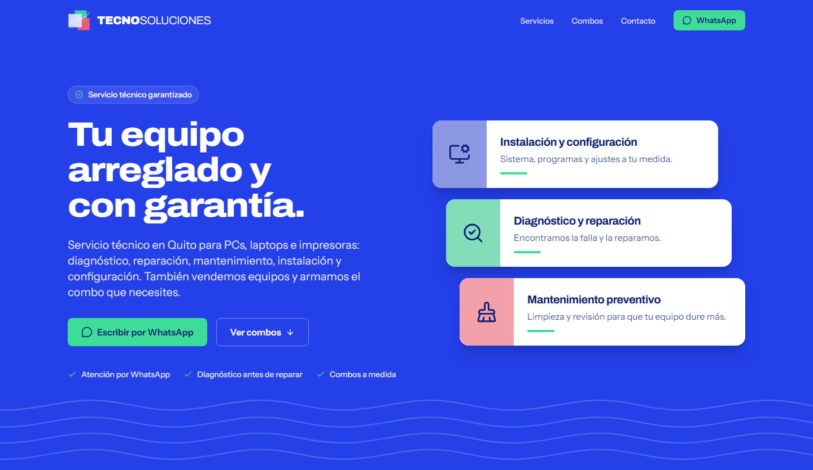
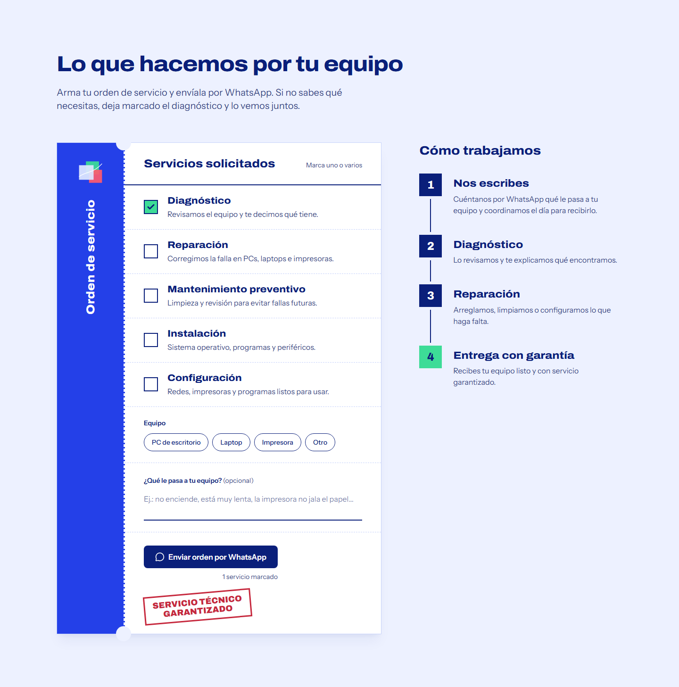
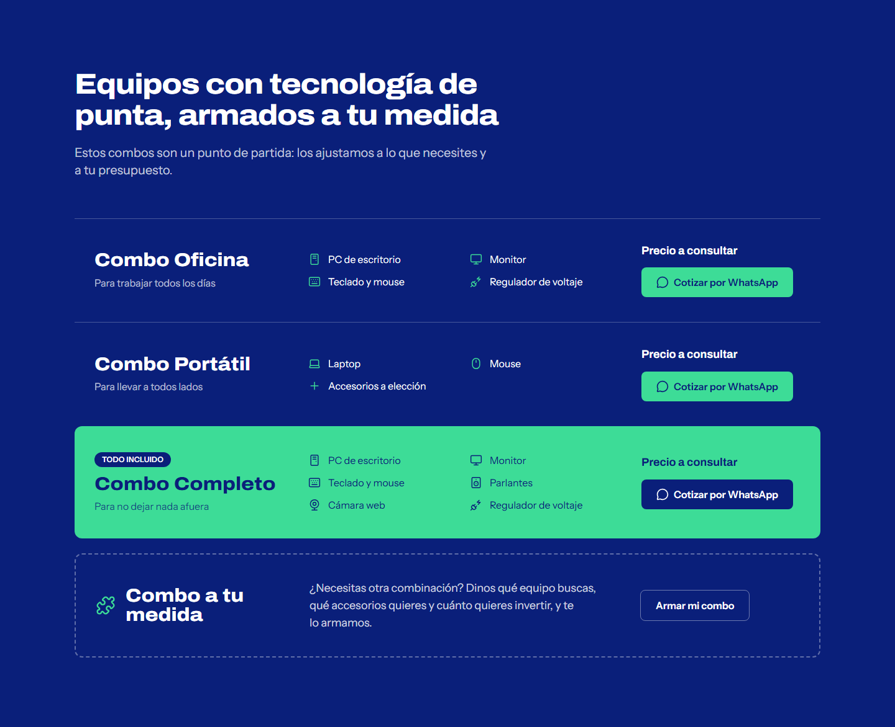
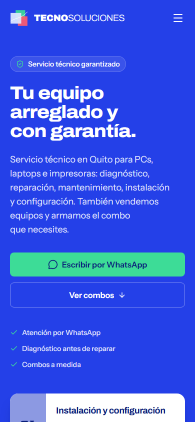

Tecnosoluciones
Landing page para un servicio técnico de computadoras en Quito, Ecuador. Su único objetivo es que cada visita termine en una conversación de WhatsApp con la información que el técnico necesita para responder.
# React 19 · Vite · Tailwind CSS 4 · ESLint · Cloudflare Pages## contexto
Tecnosoluciones repara, mantiene e instala PCs, laptops e impresoras, y vende equipos en combos a medida. Después de cerrar su local físico, todo el contacto con clientes pasa por WhatsApp, pero el negocio no tenía presencia en internet.
El sitio le da una página propia, rápida y pensada para el celular. En lugar de recibir un "hola, ¿cuánto cuesta?", el técnico recibe un mensaje ordenado con el equipo, el servicio y el problema.
## capturas




## qué hace
- Orden de servicio interactiva: el cliente marca los servicios, elige el tipo de equipo y describe el problema; el sitio arma el mensaje y abre WhatsApp con él.
- Combos de equipos con cotización por WhatsApp, cada uno con su mensaje prellenado.
- Código QR para escribir desde el celular cuando se visita el sitio en una computadora.
- Diseño mobile-first con menú hamburguesa y navegación fija.
## decisiones técnicas
- el contenido vive en datos, no en los componentes
- Servicios, pasos y combos están en
src/data/y los componentes los recorren. Para cambiar un texto o añadir un combo no hace falta tocar JSX. - WhatsApp en un solo lugar
- El número y la función
waLink(mensaje)están en un único archivo de configuración. Todos los botones, la orden de servicio y el QR salen de ahí, así que cambiar el número es una línea. - sin datos falsos en producción
- Lo que el negocio aún no ha confirmado no se muestra con placeholders: los combos sin precio dicen "Precio a consultar" y los datos de contacto vacíos se ocultan.
- accesible desde el inicio
- HTML semántico, formularios con
fieldsetylabelreales, foco visible, contraste AA y animaciones que respetanprefers-reduced-motion.